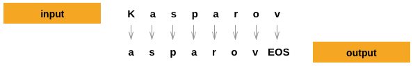

基与字符级RNN（Char-RNN）的人名生成
作者: Sean Robertson
在 上一个教程 里我们使用RNN把名字分类到它所属的语言中, 这次我们改变一下来学习从语言中生成名字.
> python sample.py Russian RUS
Rovakov
Uantov
Shavakov
> python sample.py German GER
Gerren
Ereng
Rosher
> python sample.py Spanish SPA
Salla
Parer
Allan
> python sample.py Chinese CHI
Chan
Hang
Iun我们仍然手工搭建一个包含几个线性层的小的RNN. 这次的最大的不同是输入一个类别, 每次输出一个字母, 而不是读入所有名字的字母来预测一个类别. 循环的预测每一个字母来构成语言（也可以用文 字或者其他更高级的结构完成）, 通常被称为“语言模型”.
**推荐阅读: **
假设你至少安装了PyTorch, 熟悉Python, 理解Tensors:
- http://pytorch.org/ : 安装说明
- PyTorch 深度学习: 60 分钟极速入门教程 获取一般的 PyTorch 入门
- 跟着例子学习 PyTorch 广泛且深入的概述
- PyTorch for former Torch users 如果曾经是 Lua Torch 的用户
下面这些对了解 RNNs 和其工作原理也是很有用的:
- The Unreasonable Effectiveness of Recurrent Neural Networks 展示了一系列真实生活中的例子
- Understanding LSTM Networks 是一篇特别关于LSTMs的文章, 但是对于一般的RNNs也很有益的
还建议上一个教程: 用字符级RNN分类名称
数据准备
Note
从 这里 下载数据, 并解压到当前目录.
更多的细节参考上一个教程, 总之, 数据含有一批纯文本文件: data/names/[Language].txt 每一行一个人名. 将行分割成数组, 并把 Unicode 转换成 ASCII 编码, 最后放进一个字典里 {language: [names ...]}.
from __future__ import unicode_literals, print_function, division
from io import open
import glob
import unicodedata
import string
all_letters = string.ascii_letters + " .,;'-"
n_letters = len(all_letters) + 1 # 添加 EOS 标记
def findFiles(path): return glob.glob(path)
# 将 Unicode 字符串转换为纯 ASCII 编码, 感谢 http://stackoverflow.com/a/518232/2809427
def unicodeToAscii(s):
return ''.join(
c for c in unicodedata.normalize('NFD', s)
if unicodedata.category(c) != 'Mn'
and c in all_letters
)
# 读取文件并分割成行
def readLines(filename):
lines = open(filename, encoding='utf-8').read().strip().split('\n')
return [unicodeToAscii(line) for line in lines]
# 构建映射字典 category_lines , 每个类别是由很多个行组成的list
category_lines = {}
all_categories = []
for filename in findFiles('data/names/*.txt'):
category = filename.split('/')[-1].split('.')[0]
all_categories.append(category)
lines = readLines(filename)
category_lines[category] = lines
n_categories = len(all_categories)
print('# categories:', n_categories, all_categories)
print(unicodeToAscii("O'Néàl"))创建网络
这个网络扩展了 上一个教程的RNN , 为类别张量添加了一个额外的参数, 并和其他的参数串联在一起. 类别张量
和字母的输入一样是 one-hot 向量.
我们将输出解释成为下一个字母的概率, 采样的时候, 最有可能的输出被当做下一个输入.
为了让网络更加有效工作, 我添加了第二个线性层 o2o （在合并了隐藏层和输出层的后面）. 还有一个 Dropout 层, 使输入的部分值以给定的概率值随机的变成 0 （这里概率取0.1）, 这样做通常是为了模糊输入以防止过拟合. 这里我们在网络的最末端使用它, 从而故意添加一些混乱和增加采样的多样化.

import torch
import torch.nn as nn
from torch.autograd import Variable
class RNN(nn.Module):
def __init__(self, input_size, hidden_size, output_size):
super(RNN, self).__init__()
self.hidden_size = hidden_size
self.i2h = nn.Linear(n_categories + input_size + hidden_size, hidden_size)
self.i2o = nn.Linear(n_categories + input_size + hidden_size, output_size)
self.o2o = nn.Linear(hidden_size + output_size, output_size)
self.dropout = nn.Dropout(0.1)
self.softmax = nn.LogSoftmax(dim=1)
def forward(self, category, input, hidden):
input_combined = torch.cat((category, input, hidden), 1)
hidden = self.i2h(input_combined)
output = self.i2o(input_combined)
output_combined = torch.cat((hidden, output), 1)
output = self.o2o(output_combined)
output = self.dropout(output)
output = self.softmax(output)
return output, hidden
def initHidden(self):
return Variable(torch.zeros(1, self.hidden_size))训练
训练前的准备
首先, 利用辅助函数产生随机的（category, line）对:
import random
# 从list中随机选取项
def randomChoice(l):
return l[random.randint(0, len(l) - 1)]
# 获取随机的类别和该类别中随机的行
def randomTrainingPair():
category = randomChoice(all_categories)
line = randomChoice(category_lines[category])
return category, line对每一个时间点（也就是说在训练集中词的每个字母）网络的输入是 (类别, 当前字母, 隐藏层状态) , 输出是 (下一个字母, 下一个隐藏层状态) . 对于每一个训练集, 我们需要的是类别、输入的字母集、输出/目标字母集.
因为在每一步, 我们从当前的字母预测下一个字母, 这样的字母对是在原有行中连续字母的集合, 例如, 对于 "ABCD<EOS>" 将会产生 (“A”, “B”), (“B”, “C”), (“C”, “D”), (“D”, “EOS”).

类别张量是一个大小为 <1 x n_categories> 的 one-hot tensor 张量, 在训练的每一个时间点把它喂给网络 —— 这是一个设计的选择, 它可以被当作为初始隐藏状或其他策略的一部分.
# 类别的 one-hot 向量
def categoryTensor(category):
li = all_categories.index(category)
tensor = torch.zeros(1, n_categories)
tensor[0][li] = 1
return tensor
# 输入串从第一个字母到最后一个字母（不包括 EOS ）的 one-hot 矩阵
def inputTensor(line):
tensor = torch.zeros(len(line), 1, n_letters)
for li in range(len(line)):
letter = line[li]
tensor[li][0][all_letters.find(letter)] = 1
return tensor
# 目标的第二个字母到结尾（EOS）的 LongTensor
def targetTensor(line):
letter_indexes = [all_letters.find(line[li]) for li in range(1, len(line))]
letter_indexes.append(n_letters - 1) # EOS
return torch.LongTensor(letter_indexes)为了训练过程的便利, 添加一个 randomTrainingExample 函数, 获取随机的 (category, line) 对, 并把他们转换成需要的 (category, input, target) 张量.
# 从随机的（category, line）对中生成 category, input, and target 张量
def randomTrainingExample():
category, line = randomTrainingPair()
category_tensor = Variable(categoryTensor(category))
input_line_tensor = Variable(inputTensor(line))
target_line_tensor = Variable(targetTensor(line))
return category_tensor, input_line_tensor, target_line_tensor网络的训练
与分类相比, 分类只用到了最后的输出, 而这里每个步都会产生一个预测, 所以我们需要计算每一步的损失.
自动求导（autograd）的魔力就在于, 它允许将每一步的损失简单的加和, 并在最后调用 backward
criterion = nn.NLLLoss()
learning_rate = 0.0005
def train(category_tensor, input_line_tensor, target_line_tensor):
hidden = rnn.initHidden()
rnn.zero_grad()
loss = 0
for i in range(input_line_tensor.size()[0]):
output, hidden = rnn(category_tensor, input_line_tensor[i], hidden)
loss += criterion(output, target_line_tensor[i])
loss.backward()
for p in rnn.parameters():
p.data.add_(-learning_rate, p.grad.data)
return output, loss.data[0] / input_line_tensor.size()[0]为了跟踪训练花费了多长时间, 这里添加一个 timeSince(timestamp) 函数, 返回一个人们易读的字符串:
import time
import math
def timeSince(since):
now = time.time()
s = now - since
m = math.floor(s / 60)
s -= m * 60
return '%dm %ds' % (m, s)训练和往常一样, 不停的调用 train 并等待一会, 打印当前时间, 每隔 print_every 个例子打印 loss, 将每 plot_every 个例子的平均损失保存在 all_losses 中以便后面画图.
rnn = RNN(n_letters, 128, n_letters)
n_iters = 100000
print_every = 5000
plot_every = 500
all_losses = []
total_loss = 0 # 每 plot_every 次迭代需要重置
start = time.time()
for iter in range(1, n_iters + 1):
output, loss = train(*randomTrainingExample())
total_loss += loss
if iter % print_every == 0:
print('%s (%d %d%%) %.4f' % (timeSince(start), iter, iter / n_iters * 100, loss))
if iter % plot_every == 0:
all_losses.append(total_loss / plot_every)
total_loss = 0绘制损失
从 all_losses 中绘制历史损失, 以展现网络的学习过程
import matplotlib.pyplot as plt
import matplotlib.ticker as ticker
plt.figure()
plt.plot(all_losses)网络采样
为了采样, 我们给网络一个字母并问下一个字母是什么, 重复这个过程直到 EOS 标记.
- 创建输入类别、起始字母和隐藏层状态的张量
- 创建一个带有起始字母的
output_name串 - 直到最大的输出长度,
- 当前字母喂给网络
- 从最高的输出获取下一个字母和下一个隐藏层状态
- 如果输出字母是 EOS, 算法结束
- 如果输出是常规字母, 将其加入到
output_name并继续
- 返回最终的名字
Note
与给定起始字母不同的是, 有其他的策略是在训练的时候包含一个“串起始”标记, 让网络选择属于自己的起始字母.
max_length = 20
# 从类别和起始字母采样
def sample(category, start_letter='A'):
category_tensor = Variable(categoryTensor(category))
input = Variable(inputTensor(start_letter))
hidden = rnn.initHidden()
output_name = start_letter
for i in range(max_length):
output, hidden = rnn(category_tensor, input[0], hidden)
topv, topi = output.data.topk(1)
topi = topi[0][0]
if topi == n_letters - 1:
break
else:
letter = all_letters[topi]
output_name += letter
input = Variable(inputTensor(letter))
return output_name
# 给定一个类别和多个起始字母 获取个采样结果
def samples(category, start_letters='ABC'):
for start_letter in start_letters:
print(sample(category, start_letter))
samples('Russian', 'RUS')
samples('German', 'GER')
samples('Spanish', 'SPA')
samples('Chinese', 'CHI')练习
- 尝试使用不同 类别->行 数据集, 例如:
- 小说系列 -> 角色名字
- 词性 -> 词语
- 国家 -> 城市
- 使用“串起始”标记, 使采样的时候不用给定起始字母
- 使用更大和/或更好的网络结构获取更好的结果
- 尝试一下 nn.LSTM 和 nn.GRU 层
- 将这些 RNNs 组合成更高级的网络
Total running time of the script: ( 0 minutes 0.000 seconds)
Download Python source code: char_rnn_generation_tutorial.pyDownload Jupyter notebook: char_rnn_generation_tutorial.ipynb
Gallery generated by Sphinx-Gallery